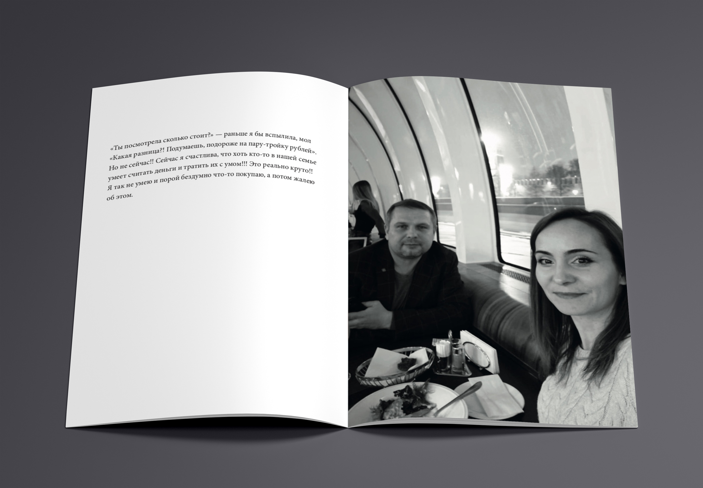

Фотокнига «AMORE»
Вы бы смогли принять недостатки любимого человека и сохранить отношения? На протяжении нескольких лет они влюблены и знают друг о друге всё до мельчайших деталей. Сколько сахара Он кладет в чай или почему Она не может уснуть. Иногда, чтобы быть счастливым, нужно где-то промолчать, а в какой-то ситуации и вовсе смириться.

Перед созданием проекта было проведено маркетинговое исследование, которое показало, что на данный момент не существует прямых аналогов "AMORE". Существуют только классические фотокниги на заказ и обычные книги со схожей тематикой. Для печати фотокниги была выбрана мелованная матовая бумага. Обложка плотностью 300 грамм, а основной блок 150. Это сделано для увеличения времени сохранности печатного издания. Из-за небольшого размера страничного блока, что добавляет удобств и позволяет без проблем брать фотокнигу с собой, для печати было выбрано скрепление КБС. Печать цифровая.